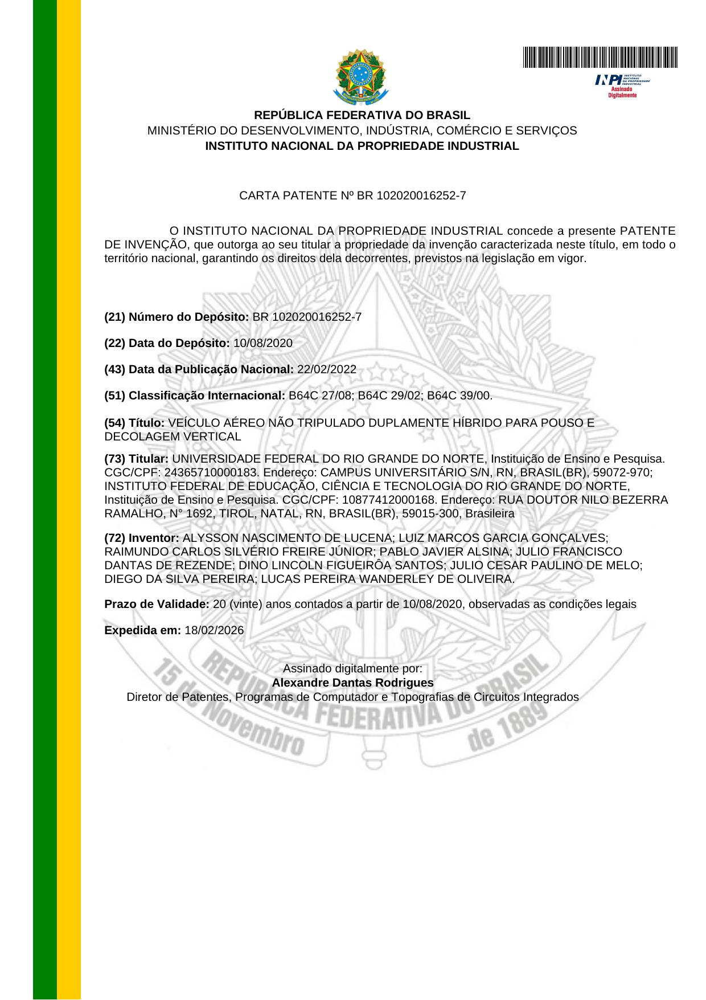
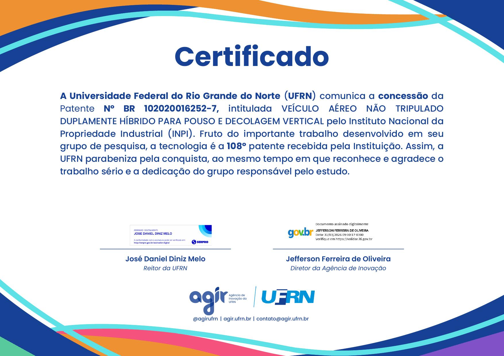

Publicado em 20 de abril de 2026
Após quase seis anos desde o depósito, recebi em fevereiro de 2026 a concessão da patente BR 102020016252-7 — Veículo Aéreo Não Tripulado Duplamente Híbrido para Pouso e Decolagem Vertical — pelo Instituto Nacional da Propriedade Industrial (INPI).
A invenção foi desenvolvida durante minha bolsa no projeto AEDES (Aeronave de Defesa Social), dos professores Dino Lincoln e Júlio Resende, pelo IMD-UFRN, em colaboração com pesquisadores da UFRN e do IFRN. O sistema propõe uma arquitetura híbrida dupla para VANTs com capacidade de pouso e decolagem vertical (VTOL), combinando diferentes fontes de propulsão para ampliar autonomia e versatilidade operacional.
O depósito foi realizado em agosto de 2020. Patentes de invenção no Brasil seguem um processo longo de exame técnico — e ver esse trabalho formalmente reconhecido pelo INPI, com validade de 20 anos, é uma satisfação que vale a espera. Soube da concessão em 1º de abril, quando meu amigo e co-inventor principal Alysson Lucena me trouxe a notícia. Agradeço a ele e a todos os co-inventores e à equipe do laboratório que tornaram esse projeto possível.

Carta Patente BR 102020016252-7, expedida pelo INPI em 18/02/2026.

Certificado emitido pela UFRN, reconhecendo a 108ª patente concedida à instituição.
{kind=link}
{kind=link}